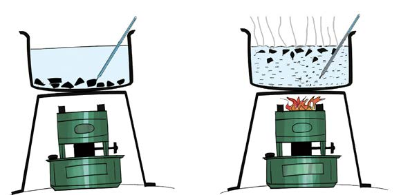

Table 1: Heat in liquids
| No. | Pieces of paper | Time (Min.) | Temperature (°C) | Results |
|---|---|---|---|---|
| 1. | Before lighting the stove | 5 | ||
| 2. | After lighting the stove | 10 |

(a)(b)
Results
The paper pieces stayed at the bottom after five minutes in water. This shows the water did not rise, and the temperature stayed the same. After heating, the water and paper pieces began to rise together. The temperature increased after the water started boiling. Heat transferred from the stove to the pot and water by convection method.
Conclusion
In this experiment, it is shown that, as water heats up, it rises and transfers heat to the pot by convection.